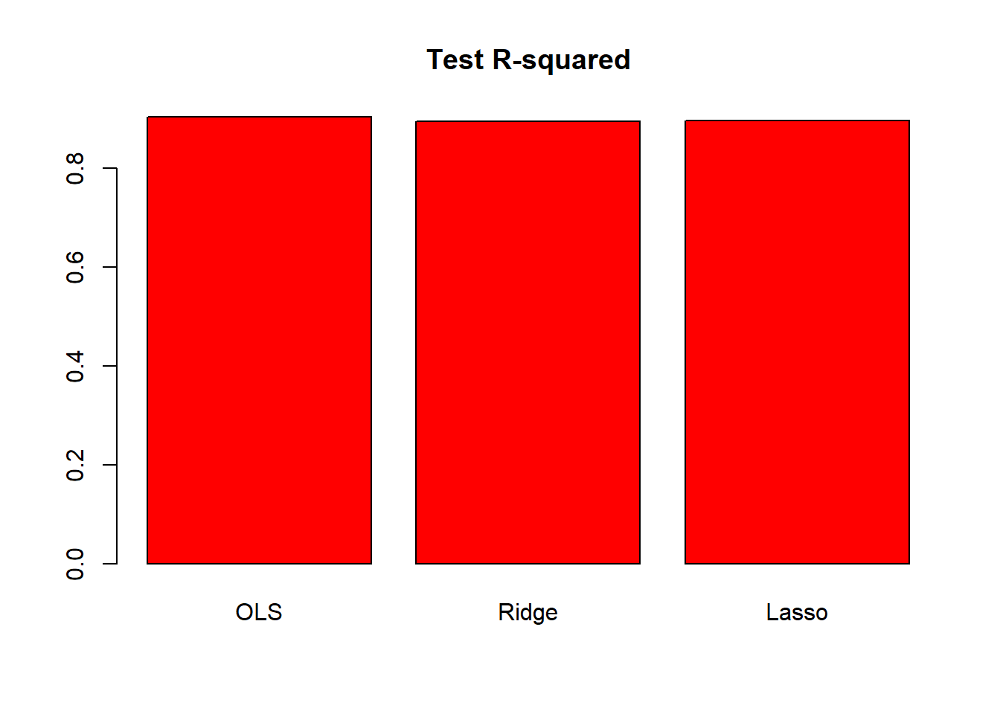
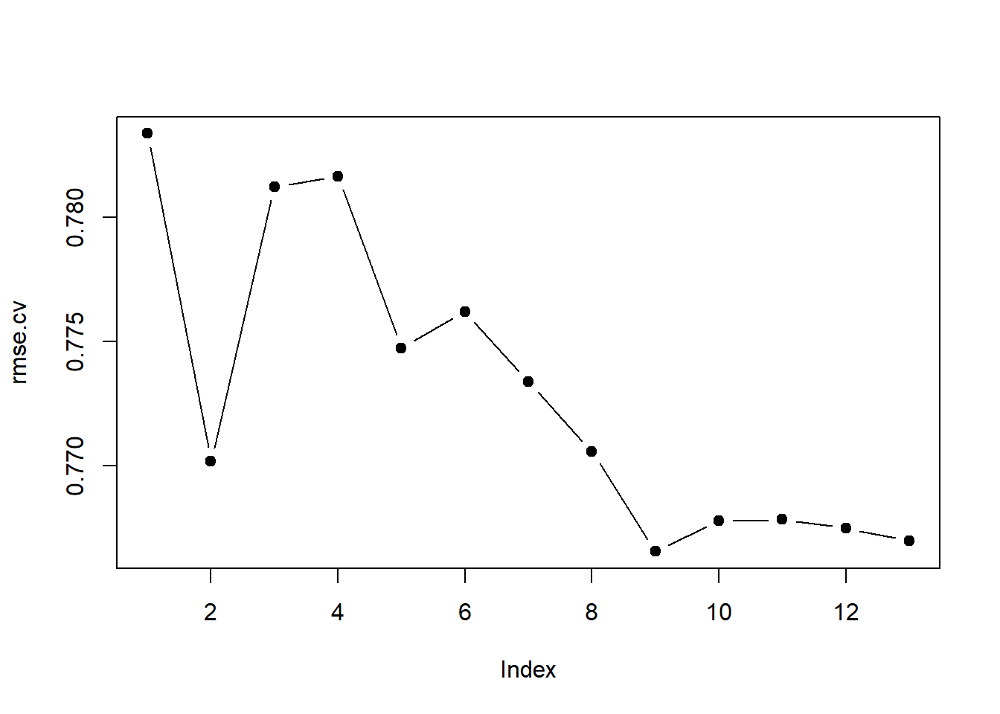
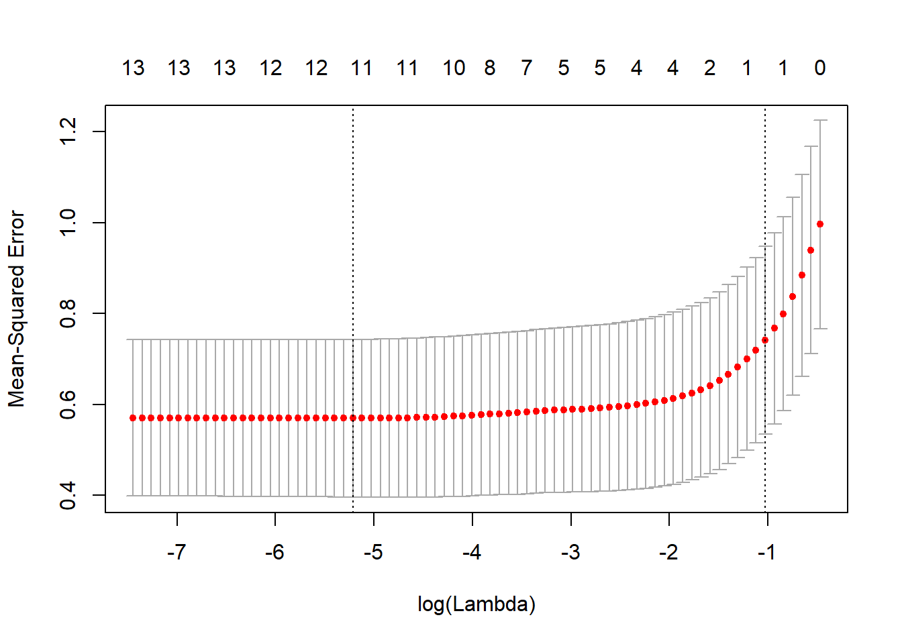
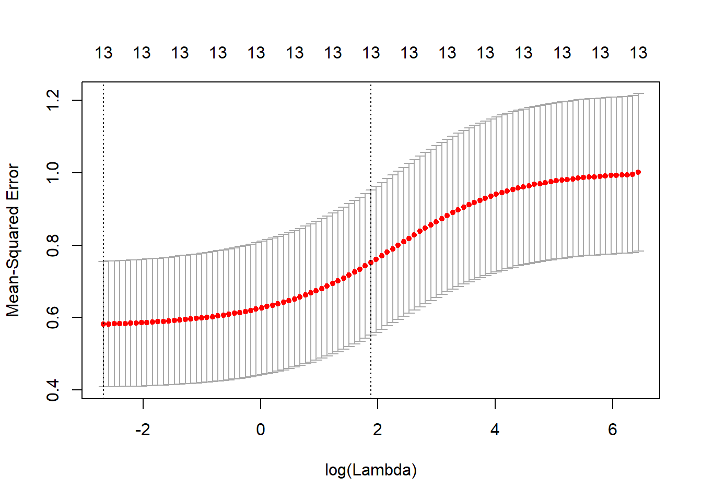

In this exercise, we will predict the number of applications received using the College data set. You need to load libary(ISLR) and then type ?College to get the codebook.
Load and split the College data.
library(ISLR)
set.seed(11)
sum(is.na(College))## [1] 0# normalize
College[, -1] <- apply(College[, -1], 2, scale)
train.size <- dim(College)[1] / 2
train <- sample(1:dim(College)[1], train.size)
test <- -train
College.train <- College[train, ]
College.test <- College[test, ]Number of applications is the Apps variable.
lm.fit <- lm(Apps ~ . , data = College.train)
lm.pred <- predict(lm.fit, College.test)
mean((College.test[, "Apps"] - lm.pred)^2)## [1] 0.1027103Test RSS is 0.1027103
Pick \(\lambda\) using College.train and report error on College.test
library(glmnet)
train.mat <- model.matrix(Apps ~ . -1 , data = College.train)
test.mat <- model.matrix(Apps ~ . -1, data = College.test)
grid <- 10 ^ seq(4, -2, length = 100)
mod.ridge <- cv.glmnet(train.mat, College.train[, "Apps"],
alpha = 0, lambda = grid, thresh = 1e-12)
lambda.best <- mod.ridge$lambda.min
lambda.best## [1] 0.01ridge.pred <- predict(mod.ridge, newx = test.mat, s = lambda.best)
mean((College.test[, "Apps"] - ridge.pred)^2)## [1] 0.1125371Pick \(\lambda\) using College.train and report error on College.test.
mod.lasso <- cv.glmnet(train.mat, College.train[, "Apps"],
alpha = 1, lambda = grid, thresh = 1e-12)
lambda.best <- mod.lasso$lambda.min
lambda.best## [1] 0.01lasso.pred <- predict(mod.lasso, newx = test.mat, s = lambda.best)
mean((College.test[, "Apps"] - lasso.pred)^2)## [1] 0.1103055Again, Test RSS is slightly higher than OLS, 0.1027103.
The coefficients look like
mod.lasso <- glmnet(model.matrix(Apps ~ . -1, data = College),
College[, "Apps"], alpha = 1)
predict(mod.lasso, s = lambda.best, type = "coefficients")## 19 x 1 sparse Matrix of class "dgCMatrix"
## 1
## (Intercept) -2.483323e-02
## PrivateNo 9.101612e-02
## PrivateYes -9.758968e-14
## Accept 8.827830e-01
## Enroll .
## Top10perc 1.285778e-01
## Top25perc .
## F.Undergrad .
## P.Undergrad .
## Outstate -3.693941e-02
## Room.Board 2.682937e-02
## Books .
## Personal .
## PhD -1.307949e-02
## Terminal -1.016626e-02
## S.F.Ratio .
## perc.alumni -1.794075e-03
## Expend 8.228831e-02
## Grad.Rate 1.271356e-02**Results for OLS, Lasso, Ridge are comparable. Furthermore, it shrinks the Enroll, Top25perc, P.Undergrad, Room.Board, Books, Personal, PhD, and S.F.Ratio variables to exactly zero and shrinks coefficients of other variables. Here are the test \(R^2\) for all models.
test.avg <- mean(College.test[, "Apps"])
lm.test.r2 <- 1 - mean((College.test[, "Apps"] - lm.pred)^2) /
mean((College.test[, "Apps"] - test.avg)^2)
ridge.test.r2 <- 1 - mean((College.test[, "Apps"] - ridge.pred)^2)/
mean((College.test[, "Apps"] - test.avg)^2)
lasso.test.r2 <- 1 - mean((College.test[, "Apps"] - lasso.pred)^2) /
mean((College.test[, "Apps"] - test.avg)^2)
barplot(c(lm.test.r2, ridge.test.r2, lasso.test.r2),
col = "red", names.arg = c("OLS", "Ridge", "Lasso"),
main = "Test R-squared")
The plot shows that test \(R^2\) for all models are around \(0.9\). All models predict college applications with high accuracy.
We will now try to predict the per capita crime rate in the Boston data set. The Boston data set is in the MASS library.
set.seed(1)
library(MASS)
library(leaps)
library(glmnet)
# normalize
Boston[, -4] <- apply(Boston[, -4], 2, scale)Best subset selection
predict.regsubsets <- function(object, newdata, id, ...) {
form <- as.formula(object$call[[2]])
mat <- model.matrix(form, newdata)
coefi <- coef(object, id = id)
mat[, names(coefi)] %*% coefi
}
k <- 10
p <- ncol(Boston)-1
folds <- sample(rep(1:k, length = nrow(Boston)))
cv.errors <- matrix(NA, k, p)
for (i in 1:k) {
best.fit <- regsubsets(crim ~ . , data = Boston[folds!=i,], nvmax = p)
for (j in 1:p) {
pred <- predict(best.fit, Boston[folds==i, ], id = j)
cv.errors[i,j] <- mean((Boston$crim[folds==i] - pred)^2)
}
}
rmse.cv <- sqrt(apply(cv.errors, 2, mean))
plot(rmse.cv, pch = 19, type = "b")
which.min(rmse.cv)## [1] 9rmse.cv[which.min(rmse.cv)]## [1] 0.7665362Lasso
x <- model.matrix(crim ~ . -1, data = Boston)
y <- Boston$crim
cv.lasso <- cv.glmnet(x, y, type.measure = "mse")
plot(cv.lasso)
coef(cv.lasso)## 14 x 1 sparse Matrix of class "dgCMatrix"
## 1
## (Intercept) -3.296655e-16
## zn .
## indus .
## chas .
## nox .
## rm .
## age .
## dis .
## rad 2.675681e-01
## tax .
## ptratio .
## black .
## lstat .
## medv .sqrt(cv.lasso$cvm[cv.lasso$lambda == cv.lasso$lambda.1se])## [1] 0.8609123Ridge regression
x <- model.matrix(crim ~ . -1, data = Boston)
y <- Boston$crim
cv.ridge <- cv.glmnet(x, y, type.measure = "mse", alpha = 0)
plot(cv.ridge)
coef(cv.ridge)## 14 x 1 sparse Matrix of class "dgCMatrix"
## 1
## (Intercept) 0.001811369
## zn -0.007607351
## indus 0.027441211
## chas -0.026187226
## nox 0.030309872
## rm -0.013277569
## age 0.024031311
## dis -0.028135246
## rad 0.060548965
## tax 0.052102117
## ptratio 0.021752033
## black -0.035471949
## lstat 0.036940229
## medv -0.031141122sqrt(cv.ridge$cvm[cv.ridge$lambda == cv.ridge$lambda.1se])## [1] 0.866931See above answer for cross-validated mean squared errors of selected models.
I would choose the 9 parameter best subset model because it had the best cross-validated RMSE.